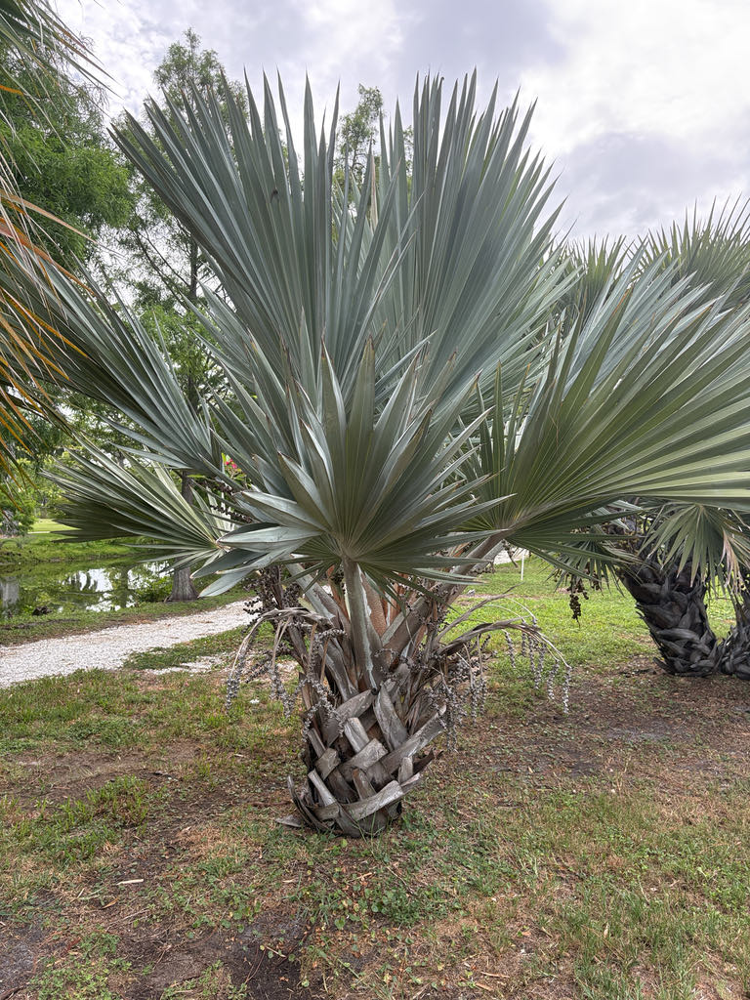

- This palm gave its name to one of the world's most successful agricultural pests. The armored scale Hemiberlesia lataniae was first described from a Latan palm — and then spread to nearly every continent, where it now devastates avocado crops. The insect is thriving globally. The palm that named it is Endangered in the wild.
- The genus Latania contains exactly three species, and nature assigned precisely one to each of the three main Mascarene Islands: the Red Latan to Réunion, the Blue to Mauritius, the Yellow to Rodrigues. No other Latania exists anywhere on Earth — and all three are running out of time in the wild.
- Young Red Latans look nothing like old ones. Juvenile fronds are flushed wine-red at the petioles, veins, and leaf margins — that color is the whole point of the common name. As the palm matures the fronds turn silver-green, and a large specimen is nearly impossible to tell from the Blue Latan without looking at young growth.
- The genus name Latania traces back through scientific Latin to the French word latanier — the local Creole name islanders on the Mascarenes already had for these palms long before botanists arrived to describe them.
The Red Latan Palm is endemic to Réunion, a French island in the southern Indian Ocean about 420 miles east of Madagascar. In the wild it is restricted to a narrow coastal strip on that single island, where it once grew in abundance before agriculture and settlement cleared most of its habitat.
The genus Latania contains exactly three species, each native to a different Mascarene island. The Red Latan (Réunion), the Blue Latan (Mauritius), and the Yellow Latan (Rodrigues) are the only members — a tight, island-hopping group found nowhere else on Earth. All three are threatened in the wild by centuries of land clearance.
In cultivation the Red Latan has spread widely through tropical and subtropical regions worldwide, valued for its dramatic foliage. In Florida it is grown as a specimen ornamental in the warmer southern and coastal counties, where the climate is closest to the warm, seasonally moist conditions of its home island.
- The IUCN Red List assessed Latania lontaroides as Endangered as of its 2022 evaluation. Wild populations on Réunion have declined sharply as land has been cleared for agriculture and development over the past two centuries; the species survives in cultivation far more successfully than it does in its native coastal scrub.
- The genus name Latania comes from the French latanier, the Creole name islanders on the Mascarenes used for these palms. It entered botanical Latin in the late 1700s — Merriam-Webster traces the word in English to 1799 — making it one of the earlier plant genus names drawn directly from a regional island vernacular rather than from Greek or classical Latin.
- UF/IFAS notes that latan palms as a genus are susceptible to lethal yellowing disease, the bacterial palm disease spread by planthoppers that has devastated coconut and other palms in Florida. This is worth keeping in mind for long-term landscape planning, though the Red Latan is not among the most severely affected species.
In its native Réunion the Red Latan provides fruit and shelter for birds and insects in a landscape where large native palms are rare. In Florida cultivation its wildlife contributions are more limited — the spring inflorescences attract pollinating insects when in bloom, and female trees produce fruits that can be taken by birds.
Because the Red Latan has no co-evolutionary history with Florida's fauna, it does not serve as a larval host for local butterflies or moths. Visitors looking for the park's strongest butterfly and pollinator habitat will find it among the native plantings.
The Red Latan is dioecious: male and female flowers are borne on entirely separate trees. Inflorescences emerge from among the fronds and can reach 4 to 6 feet in length. Flowers are small and yellowish, not showy on their own, but the branched stalks are substantial. Only female trees produce fruit, and only when a male is nearby to supply pollen.
Pear-shaped, green-brown drupes roughly 1.5 to 2 inches long, each containing one to three seeds. The seeds are teardrop-shaped, rounded at one end and pointed at the other, with low ribs on the surface. Fruit is not edible.
Costapalmate fan fronds — circular in outline but bowed by a central rib (the costa) that extends from the petiole into the blade. Fronds reach 6 to 8 feet across on petioles 4 to 5 feet long. The petioles and leaf margins carry small spines.
Young fronds are distinctively flushed red at the petioles, veins, and margins; mature fronds transition to silvery gray-green, losing most of the red except at the margins.
Solitary, slightly swollen at the base, smooth and woody, roughly 10 inches in diameter. The trunk is marked by rings where fronds have shed — scars that are close-set and slightly raised, giving the stem a banded texture. Old leaf-base boots on the upper trunk retain a faint furriness, which distinguishes mature Latania from the similar Bismarck Palm, whose boots are smooth.
Start at the crown. On a young plant, the petioles and leaf margins will be distinctly flushed wine-red — that color alone is nearly a positive ID. On a mature palm the red is gone and the fronds have turned silvery gray-green, which is where most visitors mistake it for a Bismarck Palm. To settle the question, shift your eyes to the upper trunk and look at the old leaf bases, called boots.
A Red Latan holds on to a faint, felt-like fuzziness on those boot remnants. A Bismarck's boots are clean and smooth. If the tree is fruiting, pear-shaped green-brown fruits hanging in clusters confirm you are also looking at a female.
The petioles carry small marginal spines that can scratch when working close to the fronds — worth a moment's attention but not a serious hazard. The fruit is not a food source but is not toxic. No known toxicity to people, dogs, or cats.
Bradenton sits in USDA Zone 10a, at the cooler edge of this palm's comfort zone — it is rated reliably hardy only in Zone 10b to 11. The specimen here benefits from the park's coastal microclimate, but unusually cold winters can cause frond damage.
UF/IFAS notes that latan palms as a genus are susceptible to lethal yellowing disease, the phytoplasma spread by planthoppers that has affected coconut and other palms in Florida. This is a known long-term risk for the genus in Florida landscapes.
The three Latania species are easily told apart when young by petiole color — red, blue, or yellow — but once mature all three turn silvery and become nearly indistinguishable without examining new growth. The easiest way to confirm a Red Latan at any age is to find a young frond at the crown center and check whether the petiole and veins still carry any red.


- © Randall Carter (CC-BY-NC), via iNaturalist